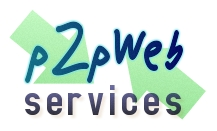

|  |
|
|  |
|
| Last Updated: 22 Nov 2006 |
|
P2PWeb |
DescriptionIn the recent
years, peer-to-peer has atracted a lot of attention as a promising
technology for massive scalable applications. On the one hand, killer
applications like file-sharing (Naspter, Kazaa, eDonkey), content
distribution (BitTorrent) and VoIP (Skype) are already generating most
of the Internet traffic (surpassing Web traffic). This is a proof of
the viability and success of such technologies.
On the other hand, in the research setting it has emerged a new kind of purely decentralized peer-to-peer networks called Structured peer-to-peer overlays or Distributed Hash Tables (DHT). These kind of networks offer interesting features like massive scalability, efficient Content-based routing and resource discovery, fault-tolerance and self-adjusting behaviours. Furthermore, DHTs are considered as a key building block for a plethora of distributed services like file-sharing, content distribution and retrieval, publish/subscribe systems, or naming systems among others. Nevertheless, DHTs have not gained the popularity of killer applications like Skype or Kazaa. They are still restricted to academic spheres and specific distributed niche applications. We however believe that in a short term, applications will benefit from DHTs services in a natural way and thus leaving the research arena definetly. Examples of this trend are Emule/Kad (Overnet DHT) or Azureus use of a DHT layer for the tracker entity. An important misconception that is hindering the adoption of DHT services is the classical use of peer-to-peer in edge desktop computers. Although it is interesting to benefit from desktop resources and bandwidth, other kind of peer-to-peer applications can be devised for the server setting. In fact, DHT services are ideally aimed for creating a distributed glue for a network of web servers offering integrated internet-wide services. Let us study severals reasons that favour DHTs for creating such a glue service:
We foresee a lot of applications that can benefit from such infrastructure. From efficient distributed RSS syndication using publish/subscribe services on top of the network, to instant messaging protocols or even distributed geo-information indexes like GoogleMaps and Google Local. Our proposed proof of concept application is framed in a known open source project called Moodle. Moodle is a virtual campus web application used in thousands of Universities and Learning Institutions around the world. We have developed an extension of Moodle that aims to interconnect all the Moodle sites in the Internet. For the moment, this extension will offer worldwide statistics of the usage of Moodle around the world, but it will also permit to locate resources in the whole Moodle network of servers. It will be thus possible for a teacher to locate course contents related to his subject in other Moodles located elsewhere. DownloadsDownloads section MoodleShare screencasts:
AuthorsPedro García López, full-time professor in the Department of Computer Science and Mathematics at Universitat Rovira i Virgili in Tarragona, Catalonia, Spain. Contact <pedro.garcia@urv.cat> |

 Description
Description